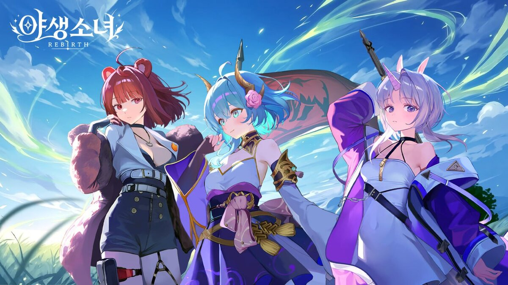
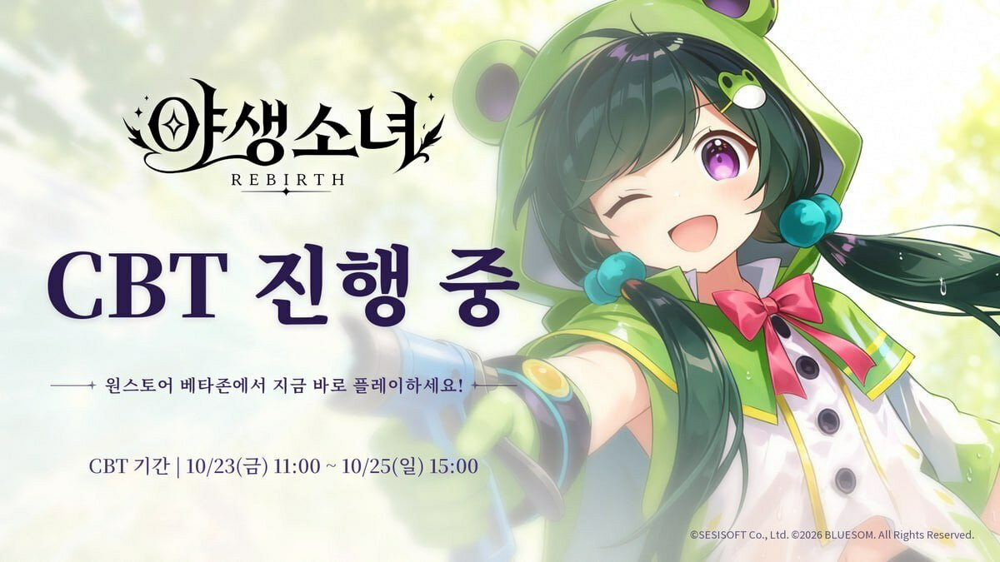

야생소녀 리버스 사전예약 방법·보상 정리 10월 30일 기준
야생소녀: 리버스가 10월 15일부터 사전예약을 받고 있고, 10월 23일부터 25일까지 열렸던 CBT는 이미 끝났어요. 10월 30일 기준으로 지금 확인된 것과 아직 공개 전인 것을 나눠서 정리해 볼게요~

공식 키비주얼이에요. 곰 귀, 용 뿔, 토끼 귀를 단 아니마 세 명이 나와요. ⓒ2026 BLUESOM · SESISOFT
이미지 출처: 인벤 · 네이버 본문엔 받아서 재업로드 권장
야생소녀 리버스 사전예약은 어디서 어떻게 하나요?
공식 사전예약 페이지에서 스토어를 고르고 전화번호를 입력한 뒤 필수 동의에 체크하면 사전예약이 끝나요. 야생소녀: 리버스 공식 홈페이지(wildgirls.sesisoft.com)에서 바로 할 수 있어요.
- 스토어 선택: 구글 플레이 또는 앱스토어
- 전화번호 입력
- 필수 동의 체크: 만 14세 이상, 개인정보 수집·이용 (마케팅 수신 동의는 선택)
필수 동의를 하지 않으면 사전예약과 보상을 받을 수 없고, 게임 이용 자체는 가능하다고 안내돼 있어요. 마케팅 수신은 선택이라 체크 안 하셔도 돼요. 스토어에서 바로 하는 사전예약은 구글 플레이와 원스토어에서 받고 있고, 앱스토어는 10월 30일 기준 준비 중이에요. 마감일 안내가 아직 없어서, 하실 거라면 마감 걱정 없이 지금 해두는 쪽이 마음 편하죠~ 공식 네이버 라운지도 운영 중이라 새 소식은 거기서도 볼 수 있어요.
공식 사전예약 입력 화면이에요.
사전예약 보상은 뭐가 있고 언제 받나요?
사전예약 보상은 정식 출시 후 인게임으로 지급되고, 공식 사전예약 페이지 기준으로 소환 티켓과 성장 재화가 걸려 있어요. 10월 30일 시점 안내를 옮겨 두면 이래요.
| 구분 | 보상 (공식 사전예약 페이지 기준) |
|---|---|
| 사전예약 페이지 | 캐릭터·스킬북·무기 소환 티켓 각 50장 |
| 스토어 사전예약 | 시간석 1,000개, 성장의 모래시계 5개, 시공의 자물쇠 10개 |
| SNS 공유 추첨 | 구글플레이 5만원권 10명, 1만원권 50명, 시간석 1,000개 100명 |
| 숨겨진 시간선 | 1단계 시간석 1,000개 / 2단계 부유천하 콜라보 캐릭터 / 3단계 스킬북 소환 티켓 100장 / 4단계 캐릭터 소환 티켓 100장 |
소환 티켓은 캐릭터·스킬북·무기 세 종류가 각각 50장씩이라, 출시 첫날 뽑기 계획을 세울 때 든든하네요. 시간석 1,000개는 스토어 사전예약 보상에도, SNS 추첨 보상에도 같은 수량으로 걸려 있고요. SNS 추첨은 링크와 해시태그를 공유한 뒤 공식 커뮤니티에 인증하는 방식이에요. 사전예약 인원에 따라 추가 보상이 열리는 '숨겨진 시간선'도 있는데, 4단계 보상은 표에 정리했고 단계별 인원 기준은 공개되지 않았어요. 아이템 이름은 출시 때 조금 달라질 수도 있어요.
CBT는 어땠고 지금도 참여할 수 있나요?
CBT는 10월 23일(금) 11시부터 25일(일) 15시까지 원스토어 베타존에서 안드로이드로 진행됐고, 지금은 종료됐어요.

CBT 당시 공식 배너예요. 지금은 종료됐고, 일정은 10/23(금) 11:00 ~ 10/25(일) 15:00이었어요.
이미지 출처: 인벤글로벌 · 네이버 본문엔 받아서 재업로드 권장
인벤글로벌 보도 기준으로 이번 CBT에서는 1장 분량의 스토리와 아니마 27종(SS급 8종)을 만나볼 수 있었고, 출석·3,000 소환 지원·스테이지 클리어 이벤트가 열렸어요. 설문과 버그 제보 이벤트도 있었는데, 각각 100명을 추첨해 원스토어 포인트 1만 점을 주는 방식이었고 10월 28일에 마감됐어요. CBT가 1장까지였으니, 정식 출시 때 어디까지 열리는지가 관건이에요.
어떤 게임이고, 출시일은 나왔나요?
야생소녀: 리버스는 시간을 되돌리는 방치형 RPG이고, 정식 출시일은 10월 30일 기준 아직 공개되지 않았어요. 2020년에 나온 전작 '야생소녀'의 세계관과 캐릭터를 이어받은 작품이에요.
동물의 특징을 가진 인간형 존재 '아니마'가 살던 평화가 금속 생명체에게 무너지자, 구원자(단장)가 과거로 돌아가 아니마를 모아 맞서는 이야기예요. 스테이지 전투와 던전은 오프라인에서도 진행되고, 거점인 '기억의 정원'에서는 아니마와 대화하고 선물을 주면서 호감도를 올려 전용 스토리를 열 수 있어요. 출시 시점 아니마는 전작 캐릭터와 신규 캐릭터를 합쳐 약 40명이라고 해요. 아니마뿐 아니라 무기와 스킬북도 소환과 승급으로 키우고, 오파츠·유물·에테르 모듈 같은 장비 요소도 있다고 해요. 방치형이라 오래 붙잡고 있지 않아도 성장이 쌓이는 쪽이라, 짬짬이 즐기는 분들한테 잘 맞을 것 같아요.
| 구분 | 10월 30일 기준 |
|---|---|
| 확인된 것 | 사전예약 10월 15일 시작, 스토어 사전예약(구글 플레이·원스토어, 앱스토어는 준비 중), 보상은 출시 후 인게임 지급, CBT 종료 |
| 공개 전 | 정식 출시일, 사전예약 마감일, 숨겨진 시간선 인원 기준 |
| 아직 불분명한 것 | iOS CBT 여부 |
자주 묻는 질문
Q. 세븐나이츠 리버스랑 같은 게임인가요?
아니에요. 야생소녀: 리버스는 블루솜이 개발하고 세시소프트가 퍼블리싱하는 별개의 작품이라, '리버스'라는 이름만 같은 거예요.
Q. 전작 야생소녀를 안 해봤는데 괜찮을까요?
전작은 2020년에 나와 전 세계 누적 50만 다운로드를 넘긴 것으로 알려져 있어요. 전작을 해야 한다는 조건은 안내된 게 없어서, 처음이셔도 사전예약엔 문제가 없어요.
야생소녀 리버스 사전예약 정리
한 번에 정리하면, 야생소녀: 리버스 사전예약은 공식 페이지에서 받고 있고 보상은 정식 출시 후 인게임으로 들어와요. CBT는 25일에 끝났고, 출시일과 마감일은 아직 공개 전이에요. 저라면 필수 동의만 체크해서 먼저 걸어두고 공식 소식을 기다릴 것 같아요. 새 소식이 나오면 다시 정리해서 들고 올게요 ㅎㅎ
참고한 곳 (2026.10.30 기준)
· 야생소녀: 리버스 공식 홈페이지
· 인벤 야생소녀: 리버스 사전예약 기사
· 인벤글로벌 CBT 기사
· 인벤글로벌 사전예약 기사